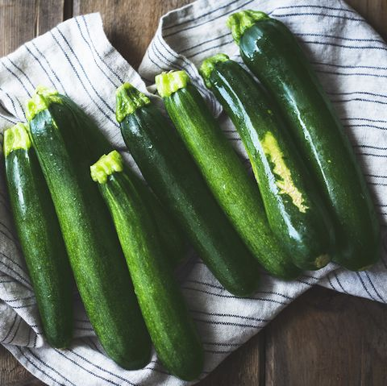

Zucchini Care

Sunlight
When to Plant
- Early Summer
- Can plant in rows or pots
Planting Recommendations
- row covers can help with pests
- Space 2-3 feet apart 6 inches deep
Soil
- pH: 6.2-6.8 for best nutrient absorption
- Mix in 3-4 inches of compost
Water
- Water regurlarly. At least an inch of moisture per week
- If soil is dry, it's time to water
Learn More
Click Here!